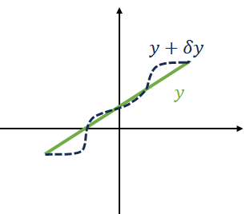

理论分析力学速成*
Table of Contents
这是物理的课，目标说清楚基本泛函量、几个方程的来历意义与简单例子（具体可看目录）
用 ' 表示对 x 求导（偶尔表示变换后），加点法表示对 t 导数，容易被忽略请留意；另因为一些特殊原因我喜欢用 j (而不是 i )表示指标
当然决定要上这门课，故而提前熟悉一下。 另外相空间 Hamilton 实在像代数结构一样被到处用,不仔细学一下实在不方便 不过老师似乎希望讲得深刻一些分析陀螺（ Landau ），甚至到 Ehrenfest? 量子时代－知道了 尽量简化直白，虽然这样例子也会少。
1. 引入
两个问题贯穿前几章（会给出解答），我们如何解决
1.1. 直线最短
两点之间最短是什么曲线？
分析
1: 研究长度，则写出表达式，由数学，得到曲线元
\begin{equation} \label{eq:1} \mathscr{L}_1:=\sqrt{1+y'^2} \end{equation}1.2. 最速降线
仅靠重力，在指定的始末点后，物体从什么曲线运动最快到达
分析：
坐标轴 x,y 找到需要的时间：
\begin{gather*} t=\frac{L}{v}\\ \frac{1}{2}mv^2=mgy\rightarrow v=\sqrt{2gy}\\ L=\int_{x_0}^{x_1} \sqrt{1+y'^2}\mathrm{d}x\\ \mathscr{L}_2:=\sqrt{\frac{{1+{y}'^2}}{{2gh}}} \end{gather*}定义了两个 \(\mathscr{L}\) ，之后用到。
2. 泛函～作用量
首先，略说 泛函 概念，说它因为其与变分法相关（变分需要函数），而变分法是最小作用， Lagrange 最小作用原理。
泛函是从一个函数给出一个值 \(\mathscr{L}:f\to \mathbb{R}\) 的映射。
定义作用量
\begin{equation*} S:=\int_{x_1}^{x_2}\mathscr{L}(y,{y}',x)\mathrm{d}x \end{equation*}其中，称 \(S\) 为作用量， \(\mathscr{L}\) 为拉氏量 Lagrange 量。
而 \(\mathscr{L}\) 就是一个泛函，输入一个函数（映射），给出一个值。
所谓（物理）变分法，(?) 就是取这个作用量最小。 类比数学求极值用导数为零来做，(考虑到作用对象是泛函，每一个不是数而是函数)这里就令
\begin{equation*} \delta S=0 \end{equation*}显然，与微分比较的话，从结果形式上 \(\mathrm{d}x\) 可以作积分变量（哑元），但 \(\delta S\) 接近于 \(\Delta S\) 无法做积分。

另一个角度上，可以当作是作扰动，所谓扰动就是改变了 y 的形式从这个需要注意到一个我们需要做的规定（为了严谨和下面推公式方便）：
\begin{equation} \label{eq:4} \delta y(x_1)=\delta y(x_2)\equiv 0 \end{equation}可以理解为不论如何扰动，我们都不干扰积分上下限，免去不必要的麻烦（难以想象如果积分上下限的改变在这个扰动中被考虑会怎样）。
代入 \(\mathscr{L}\)
\begin{gather*} \begin{split} 0=\delta S &=\delta\int_{x_1}^{x_2}\mathscr{L}(y,{y'},x)\mathrm{d}x \\ &=\int_{x_1}^{x_2} \left( \frac{\partial \mathscr{L}}{\partial y}\delta y+\frac{\partial \mathscr{L}}{\partial {y'}}\delta{y'}+\frac{\partial \mathscr{L}}{\partial x}\delta x \right)\mathrm{d}x \end{split} \end{gather*}注意我们认为（理由？） \(\mathscr{L}\) 的自变量是 y， x 的存在就像是数字 1 ，故（即便 \(\mathscr{L}\) 显含 x ）我们不用对 x 求导（对 x 求导就像普通函数对常数求导），更直白定义就是对于 x 是不存在扰动的（ \(\delta x\) ）。然后为了化简（凑答案，这是各种奇怪转换必然的最终方向）用分部积分，使得都变成 y
\begin{gather*} \begin{split} =& \int_{x_1}^{x_2}\frac{\partial \mathscr{L}}{\partial y}\delta y\mathrm{d}x+\int_{x_1}^{x_2}\frac{\partial \mathscr{L}}{\partial {y'}}\mathrm{d}\delta y \\ =& \int_{x_1}^{x_2}\frac{\partial \mathscr{L}}{\partial y}\delta y\mathrm{d}x+\frac{\partial \mathscr{L}}{\partial {y'}}\delta y \bigg|_{x_1}^{x_2} -\int_{x_1}^{x_2}\left(\frac{\mathrm{d}}{\mathrm{d}x }\frac{\partial \mathscr{L}}{\partial {y'}}\right)\delta y \mathrm{d}x\\ =& \int_{x_1}^{x_2}\left(\frac{\partial \mathscr{L}}{\partial y}-\frac{\mathrm{d}}{\mathrm{d}x }\frac{\partial \mathscr{L}}{\partial {y'}}\right)\delta y \mathrm{d}x \end{split} \end{gather*}上面利用了 2 积分项为 0 (\(\delta y(x_1)-\delta y(x_2)=0\))(?)。由前等于 0， 此处 \(\delta y\) 可是是任意的，任意扰动都不改变可以认为就等于 02 于是：
\begin{equation*} \frac{\partial \mathscr{L}}{\partial y}-\frac{\mathrm{d}}{\mathrm{d}x }\frac{\partial \mathscr{L}}{\partial {y'}}=0 \end{equation*}3. 最小量原理
此表达式称为 Euler-Lagrange 方程。
不妨应用一下到之前的两个案例。
3.1. 直线最短
对 y 求导因为没有 y 就直接等于 0。导数为常数故为直线（？）
3.2. 最速降线
1.2 技巧性较强（凑凑凑，没有答案时不知道他们怎么想到的）
首先一个（据说经典）代换，并计算对 x 导数
\begin{gather*} \mathscr{L}'=\mathscr{L}-{y'} \frac{\partial \mathscr{L}}{\partial {y'}} \\ \begin{split} \frac{\mathrm{d}}{\mathrm{d}x }\left( \mathscr{L}-{y'} \frac{\partial \mathscr{L}}{\partial {y'}} \right) &=\frac{\partial \mathscr{L}}{\partial x}+{y'}\frac{\partial \mathscr{L}}{\partial y}+\cancel{{y''}\frac{\partial \mathscr{L}}{\partial {y'}}} -\left( \cancel{{y''} \frac{\partial \mathscr{L}}{\partial {y'}}}+{y'}\frac{\mathrm{d}}{\mathrm{d}x }\frac{\partial \mathscr{L}}{\partial {y'}} \right)\\ &={{\frac{\partial \mathscr{L}}{\partial x}}}+{y'}\frac{\partial \mathscr{L}}{\partial y}-{y'} \boxed{\frac{\mathrm{d}}{\mathrm{d}x }\frac{\partial \mathscr{L}}{\partial {y'}}}\\ &={{\frac{\partial \mathscr{L}}{\partial x}}}+\cancel{{y'}\frac{\partial \mathscr{L}}{\partial y}-{y'}{\frac{\partial \mathscr{L}}{\partial {y}}}}\\ &=\frac{\partial \mathscr{L}}{\partial x}=0 \end{split} \end{gather*}于是
\begin{gather*} \begin{aligned} \mathscr{L}-y' \frac{\partial \mathscr{L}}{\partial y'}&=C\\ \sqrt{\frac{{1+{y}'^2}}{{2gy}}}- y' \frac{\partial }{\partial y'} \left( \sqrt{\frac{{1+{y}'^2}}{{2gy}}} \right)&=C\\ \sqrt{\frac{{1+{y}'^2}}{{2gy}}}-\frac{y'}{\sqrt{2gy}}\frac{2y'}{2\sqrt{1+y'^2}}&=C \\ \frac{1+y'^2-y'^2}{\sqrt{2gy}\sqrt{1+y'^2}}&=C\\ y(1+y'^2)&=\frac{1}{2gC^2} \end{aligned}\\ \end{gather*}做一个代换（这个代换颇有种已知答案凑过程）
\begin{gather*} y'=\sqrt{\frac{2R-y}{y}},2R=2gC^2\\ y=R(1-\cos\theta),\mathrm{d}y=R\sin\theta \mathrm{d}\theta\\ \rightarrow R \sin \theta\frac{\mathrm{d}\theta}{\mathrm{d}x }=\sqrt{\frac{1+\cos \theta}{1-\cos \theta}}\\ \sin\theta\frac{\sqrt{(1-\cos\theta)(1+\cos\theta)}}{1+\cos\theta}=\frac{\sin^2\theta}{1+\cos\theta}=\frac{1-\cos^2\theta}{1+\cos\theta}=1-\cos\theta \\ \mathrm{d}x=R(1-\cos\theta)\mathrm{d}\theta\\ \begin{cases} x&=R(\theta-\sin \theta)+C'\\ y&=R(1-\cos\theta) \end{cases} \end{gather*}此即摆线（在圆上标记一个点，记录它在圆转动过程中的位置就构成摆线）。
下面是物理中的情况。
3.3. 物理
(算动能)空间均匀是数值且是
对于具体问题，一般作用量有自己的形式，这里写 \(q\) 是广义坐标（比如正交笛卡尔是一组坐标，球坐标也可以构成一组坐标）
\begin{equation} \label{eq:ELeqP} \frac{\partial \mathscr{L}}{\partial q}=\frac{\mathrm{d}}{\mathrm{d}t }\frac{\partial \mathscr{L}}{\partial \dot{q}} \end{equation}当然这一点是需要证明的
证明不同坐标下都成立： 这部分内容将被折叠。 ……
4. 对称与守恒
与坐标系无关 平移 \(q_j=q_j+\sqrt{m}\varepsilon\) 旋转 \(x'=x+y\varepsilon;y'=y-x\varepsilon\)
\begin{gather*} \sum_j \end{gather*}5. Hamilton 量
6. 刘维尔定理
相当于在说它如果是一个流体，它不可压缩 ⇔ 不变
\begin{gather*} \frac{\partial H}{\partial q}= \end{gather*}7. Possion 括号
8.
非常多凑巧的事
(可惜我们没有时间) 浸渐不变量